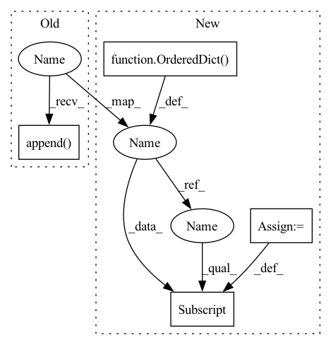

Pattern ID :6711
Before Change
cur_res = 2 * to_res
in_channels = self.map_channels[cur_res]
out_channels = self.map_channels[to_res]
self.blocks.append( BlockD(cur_res, cur_res, in_channels, out_channels))
self.blocks.append(BlockD(cur_res, to_res, out_channels, out_channels))
to_res //= 2
self.fromRGB = nn.Conv2d(self.in_channels, self.map_channels[res], 1, 1)After Change
assert 2 ** round(np.log2(res)) == res
self.res = res
self.in_channels = 3 if RGB else 1
self.blocks = OrderedDict()
// Calculating the number of channels for each resolution
self.map_channels = Generate_map_channels(res, last_res, max_channels)
// Creating blocks
to_res = res // 2
while to_res >= last_res:
cur_res = 2 * to_res
in_channels = self.map_channels[cur_res]
out_channels = self.map_channels[to_res]
self.blocks[f"res {cur_res}"] = BlockD(cur_res, to_res, in_channels, out_channels)
to_res //= 2
self.fromRGB = nn.Conv2d(self.in_channels, self.map_channels[res], 1, 1)In pattern: SUPERPATTERN
Frequency: 3
Non-data size: 4
Instances Fragment ID: 23063874
Project Name: maximkm/stylegan-anime
Commit Name: 485af9bacaa38c6d2ef013133fcf0b6d2b4fee95
Time: 2021-08-26
Author: maximkmwo@gmail.com
File Name: models/StyleGAN.py
M Class Name: Discriminator
N Class Name: Discriminator
M Method Name: __init__(5)
N Method Name: __init__(5)
M Parent Class: nn.Module
N Parent Class: nn.Module
M File Name: models/StyleGAN.py
N File Name: models/StyleGAN.py
M Start Line: 267
M End Line: 279
N Start Line: 257
N End Line: 268
Before Change
// Initializing layers
self.mapping = Mapping(latent_size, deep_mapping, normalize, eps)
self.const = nn.Parameter(torch.ones(max_channels, start_res, start_res))
self.blocks = [
BlockG(start_res, start_res, max_channels, self.map_channels[start_res], latent_size, True),
]
self.to_rgb = nn.Conv2d(self.map_channels[res], self.out_channels, 1, 1)
// Initializing weights
nn.init.xavier_normal_(self.to_rgb.weight.data)
nn.init.zeros_(self.to_rgb.bias.data)
// Creating blocks
to_res = 2 * start_res
while to_res <= res:
cur_res = to_res // 2
in_channels = self.map_channels[cur_res]
out_channels = self.map_channels[to_res]
self.blocks.append( BlockG(cur_res, to_res, in_channels, out_channels, latent_size))
to_res *= 2
// Registering parameters in the model
self.blocks = nn.ModuleList(self.blocks)After Change
// Initializing layers
self.mapping = Mapping(latent_size, deep_mapping, normalize, eps)
self.const = nn.Parameter(torch.ones(max_channels, start_res, start_res))
self.blocks = OrderedDict( [
(f"res {start_res}", BlockG(start_res, start_res, max_channels, self.map_channels[start_res], latent_size)),
])
self.to_rgb = nn.Conv2d(self.map_channels[res], self.out_channels, 1, 1)
// Initializing weights
nn.init.xavier_normal_(self.to_rgb.weight.data)
nn.init.zeros_(self.to_rgb.bias.data)
// Creating blocks
to_res = 2 * start_res
while to_res <= res:
cur_res = to_res // 2
in_channels = self.map_channels[cur_res]
out_channels = self.map_channels[to_res]
self.blocks[f"res {to_res}"] = BlockG(cur_res, to_res, in_channels, out_channels, latent_size)
to_res *= 2
// Registering parameters in the model Fragment ID: 23063873
Project Name: maximkm/stylegan-anime
Commit Name: 485af9bacaa38c6d2ef013133fcf0b6d2b4fee95
Time: 2021-08-26
Author: maximkmwo@gmail.com
File Name: models/StyleGAN.py
M Class Name: Generator
N Class Name: Generator
M Method Name: __init__(9)
N Method Name: __init__(9)
M Parent Class: nn.Module
N Parent Class: nn.Module
M File Name: models/StyleGAN.py
N File Name: models/StyleGAN.py
M Start Line: 181
M End Line: 201
N Start Line: 174
N End Line: 194
Before Change
all_pipeline_runs = self.store.get_contexts_by_type(
PIPELINE_RUN_CONTEXT_TYPE_NAME
)
runs = []
for run in all_pipeline_runs:
run_executions = self.store.get_executions_by_context(run.id)
if run_executions:
associated_contexts = self.store.get_contexts_by_execution(
run_executions[0].id
)
for context in associated_contexts:
if context.id == pipeline._id: // noqa
// Run is of this pipeline
runs.append(
PipelineRunView(
id_=run.id,
name=run.name,
executions=run_executions,
metadata_store=self,
)
)
break
logger.debug(
"Fetched %d pipeline runs for pipeline named "%s".",After Change
all_pipeline_runs = self.store.get_contexts_by_type(
PIPELINE_RUN_CONTEXT_TYPE_NAME
)
runs : Dict[str, PipelineRunView] = OrderedDict()
for run in all_pipeline_runs:
executions = self.store.get_executions_by_context(run.id)
if self._check_if_executions_belong_to_pipeline(
executions, pipeline
):
run_view = PipelineRunView(
id_=run.id,
name=run.name,
executions=executions,
metadata_store=self,
)
runs[run.name] = run_view
logger.debug(
"Fetched %d pipeline runs for pipeline named "%s".", Fragment ID: 23063872
Project Name: maiot-io/zenml
Commit Name: bd2e417198c4e3d0c9a6d036f5fcdef16a27b50e
Time: 2021-10-25
Author: michael.schuster.ffb@googlemail.com
File Name: src/zenml/metadata/base_metadata_store.py
M Class Name: BaseMetadataStore
N Class Name: BaseMetadataStore
M Method Name: get_pipeline_runs(2)
N Method Name: get_pipeline_runs(2)
M Parent Class: BaseComponent
N Parent Class: BaseComponent
M File Name: src/zenml/metadata/base_metadata_store.py
N File Name: src/zenml/metadata/base_metadata_store.py
M Start Line: 110
M End Line: 131
N Start Line: 127
N End Line: 140